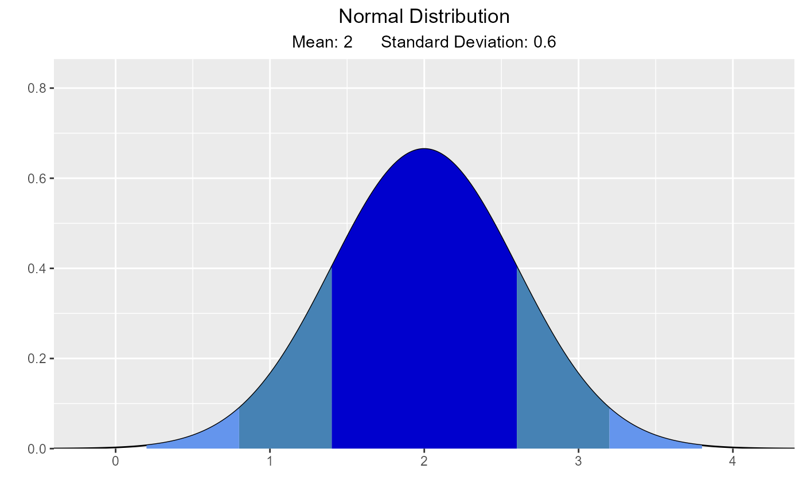
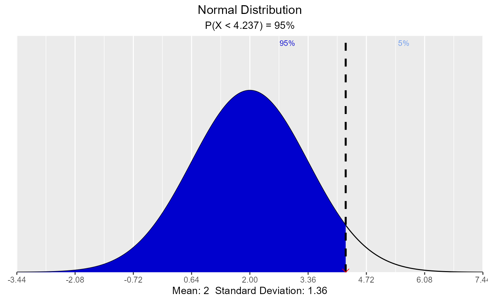
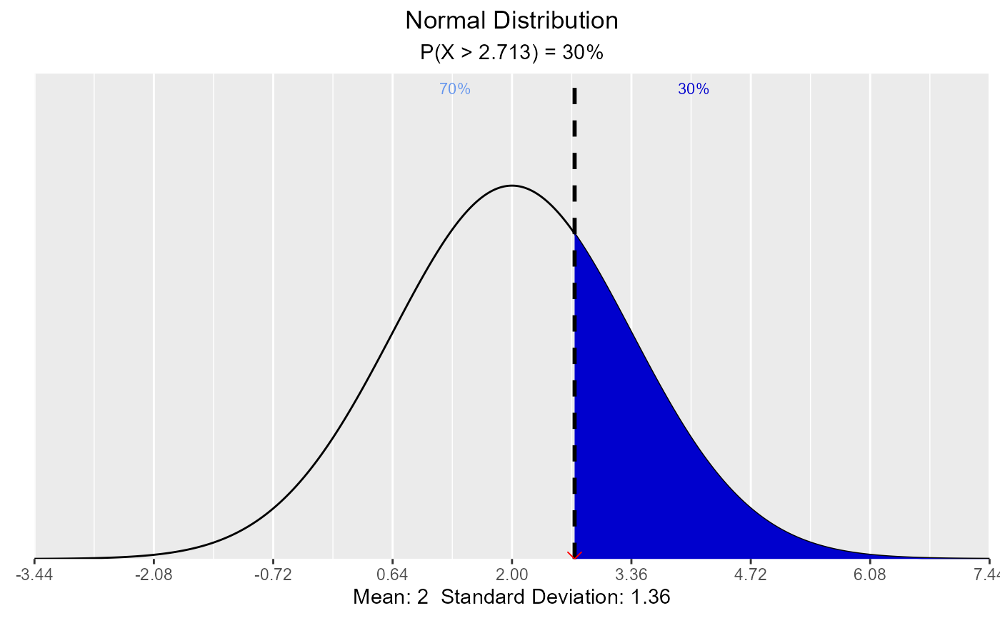
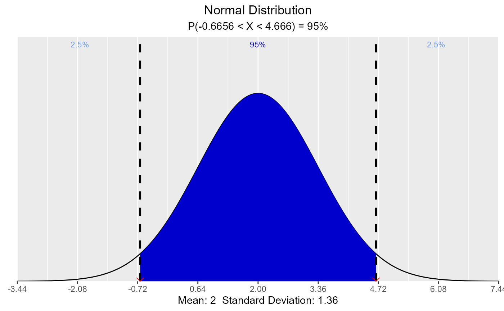
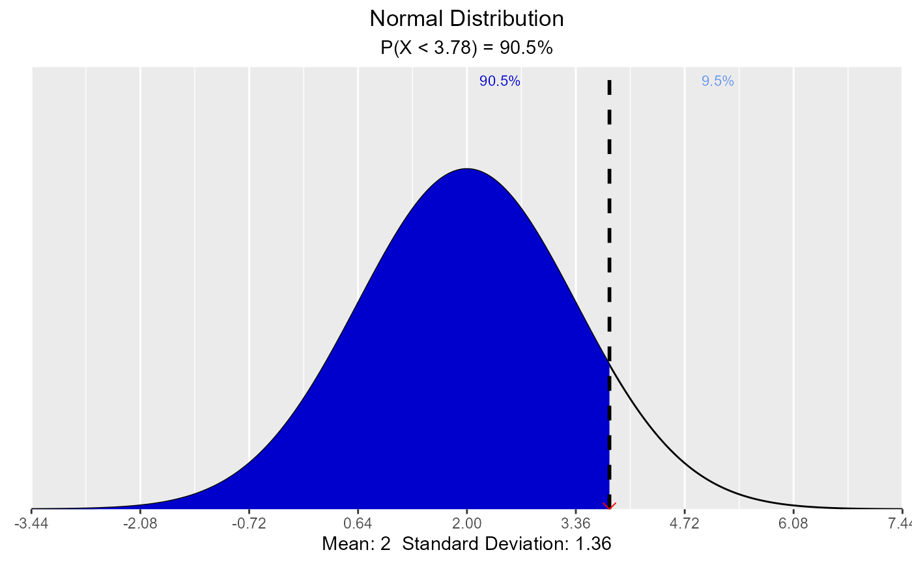
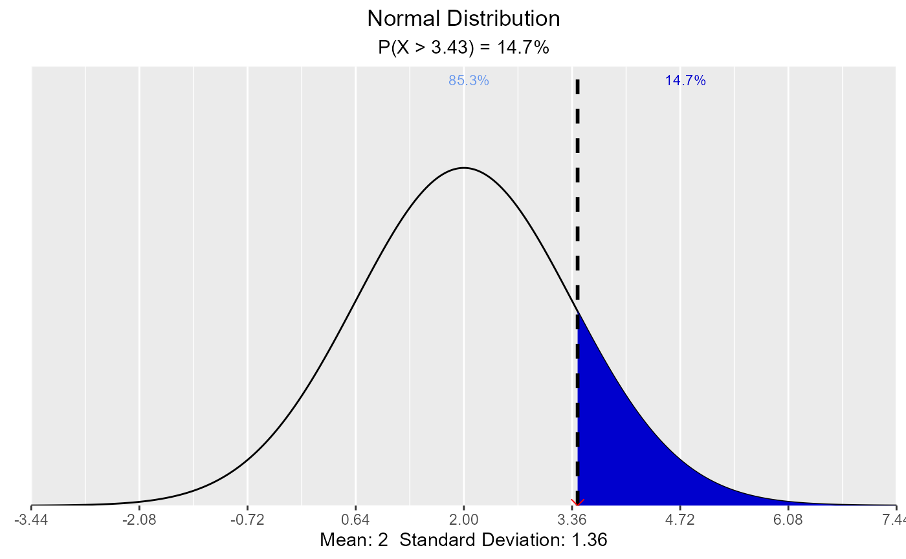
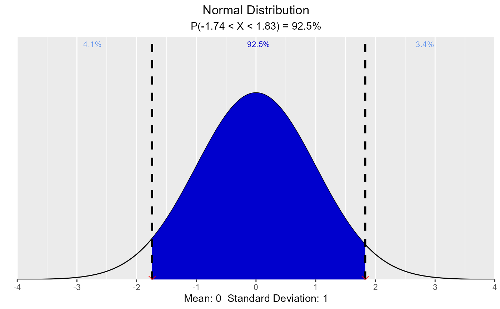

Visualize how changes in mean and standard deviation affect the shape of the normal distribution. Compute & visualize quantiles out of given probability and probability from a given quantile.
Arguments
- mean
Mean of the normal distribution.
- sd
Standard deviation of the normal distribution. It must be positive. When
meanis nonzero,sd / abs(mean)must be at least1e-10; smaller ratios are rejected. A near-zero mean is not a resolution failure: the ratio may overflow to infinity (mean = 1e-308, sd = 10) while the distribution is still perfectly resolvable, and it is drawn normally. Zero-centred distributions have no translation and may use any positivesd. The comparison is a ratio, so multiplyingmeanandsdby the same factor (a change of units, for example from metres to millimetres) never changes the result. Independently, the density must be finite (sdat least about1e-308) and the plotted windowmean +/- 4 sdmust be representable: both its ends and its width must fit in a double (sdbelow about2.2e307). Both limits come from double precision and are reported by a specific error.- print_plot
logical; if
TRUE, prints the plot else returns a plot object.- probs
Probability value, strictly between 0 and 1 and within
(1e-12, 1 - 1e-12). Fortype = "both", the representable endpoints must enclose the requested mass to relative error at most 1e-6, or a numerical-resolution error is reported.- type
Lower tail, upper tail or both.
- perc
Quantile value(s): a single value for a lower or upper tail, or two values in nondecreasing order for the interval between them. Two values select
type = "both"automatically.
Details
Percentages below 1e-10% are displayed as < 1e-10%, and probabilities within 1e-10% of 100% as > 99.9999999999%.
Supported values: for a central interval the representable endpoints
must enclose probs to within 1e-6 relative error. If not, increase
sd or choose a larger probs; ordinary inputs are unaffected.
Drawing contract: every probability, cutoff and caption is computed from the
normal density, distribution and quantile functions, never from the drawn
grid. The shaded polygon spans the whole event and is sampled on a grid
spaced in probability and in standardised units; its own area is checked
against the exact event probability and kept within 1e-6 relative error for events above the display floor. A percentage is
printed at a precision whose rounding interval contains the exact
probability, and the printed cutoffs reproduce that displayed percentage.
Because the normal is a location-scale family, multiplying mean and
sd by the same factor changes only the axis labels: the shaded
proportion, the probability caption and the standardised picture are the
same. A part of the shaded region that lies outside the plotted window is
disclosed in a plot caption. A shaded region too narrow to occupy a pixel at
the plotted scale (for example an extreme percentile of a concentrated
distribution) is marked with a visible strip in the panel and disclosed in
the caption; its polygon and its checked area are unchanged. Every plotting
grid has a bounded number of points, whatever the mean and standard
deviation.
Examples
# visualize normal distribution
vdist_normal_plot()
vdist_normal_plot(mean = 2, sd = 0.6)

# visualize quantiles out of given probability
vdist_normal_perc(0.95, mean = 2, sd = 1.36)

vdist_normal_perc(0.3, mean = 2, sd = 1.36, type = 'upper')

vdist_normal_perc(0.95, mean = 2, sd = 1.36, type = 'both')

# visualize probability from a given quantile
vdist_normal_prob(3.78, mean = 2, sd = 1.36)

vdist_normal_prob(3.43, mean = 2, sd = 1.36, type = 'upper')

vdist_normal_prob(c(-1.74, 1.83), type = 'both')
